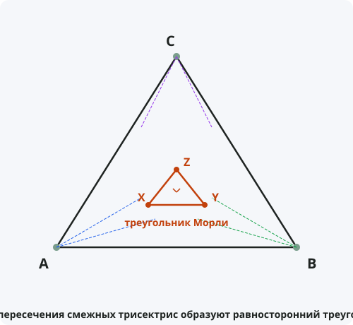

Теорема Морли
Формулировка
Точки пересечения смежных трисектрис углов произвольного треугольника образуют равносторонний треугольник. Этот треугольник называется треугольником Морли.
Обозначения
Пусть дан произвольный треугольник ABC.
Проведём трисектрисы каждого угла — лучи, делящие угол на три равные части.
X — точка пересечения трисектрис, ближайших к стороне BC.
Y — точка пересечения трисектрис, ближайших к стороне CA.
Z — точка пересечения трисектрис, ближайших к стороне AB.
Тогда треугольник XYZ — равносторонний.

Доказательство
Теорема доказана.
Свойства треугольника Морли
- Треугольник Морли всегда равносторонний, независимо от формы исходного треугольника.
- Сторона треугольника Морли равна 8R·sin(A/3)·sin(B/3)·sin(C/3), где R — радиус описанной окружности.
- Центр треугольника Морли совпадает с центром описанной окружности исходного треугольника.
- Существует 18 равносторонних треугольников, связанных с трисектрисами (теорема Морли — лишь один из них).
- Треугольник Морли всегда лежит внутри исходного треугольника.
Следствия из теоремы
- Трисекция угла — неразрешимая задача на построение циркулем и линейкой, но теорема Морли утверждает удивительный факт о трисектрисах.
- Существует 27 различных треугольников, образованных трисектрисами, 18 из которых равносторонние.
- Теорема Морли — одна из самых красивых и неожиданных теорем элементарной геометрии.
Примеры применения
Пример 1. В треугольнике с углами 30°, 60°, 90° найдите сторону треугольника Морли, если R = 10.
Решение: Сторона = 8·10·sin(10°)·sin(20°)·sin(30°) ≈ 80·0,1736·0,3420·0,5 ≈ 2,37.
Пример 2. Докажите, что треугольник Морли всегда лежит внутри исходного треугольника.
Решение: Точки пересечения трисектрис находятся внутри углов, поэтому треугольник XYZ целиком лежит внутри ABC.
Пример 3. Что произойдёт с треугольником Морли, если исходный треугольник равносторонний?
Решение: В равностороннем треугольнике все углы 60°, трисектрисы дают 20°. Треугольник Морли также равносторонний и совпадает с центром? Нет, он будет меньше, но всё равно равносторонний.
Историческая справка
Теорема названа в честь американского математика Фрэнка Морли (1860–1937), который открыл её в 1899 году.
Морли был профессором университета Джонса Хопкинса и отцом знаменитого писателя Кристофера Морли. Он специализировался на алгебре и геометрии.
Интересно, что Морли открыл эту теорему, играя с геометрическими построениями на бумаге. Он был удивлён, что такой красивый факт оставался незамеченным более 2000 лет.
Интересные факты
- Теорема Морли была названа «последним великим открытием в элементарной геометрии».
- Существует более 50 различных доказательств теоремы Морли.
- Трисекция угла невозможна циркулем и линейкой, но с помощью оригами (складывания бумаги) она выполнима.
- Теорема Морли не обобщается на деление угла на n частей для n > 3 — для квадрисектрис равносторонний треугольник уже не получается.
- В Японии теорема Морли была независимо открыта в начале XX века и опубликована на деревянных табличках сангаку.